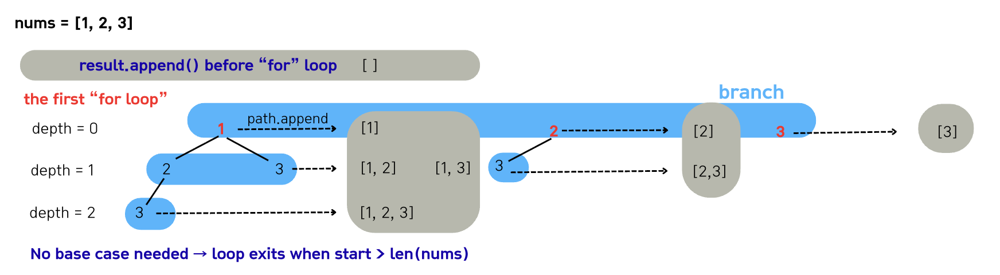
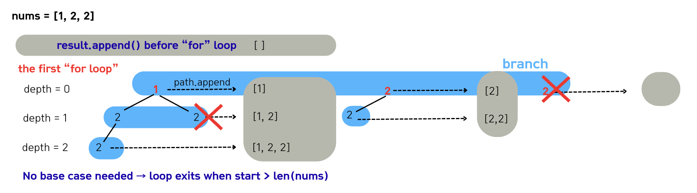
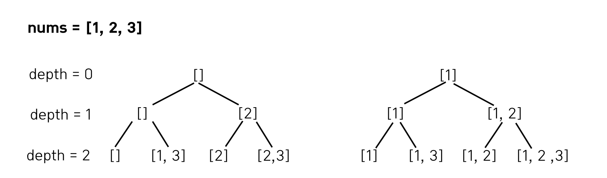

Lecture 3-1. Backtracking#
Backtracking is a technique where we explore possible candidates step by step, and whenever a candidate does not satisfy the condition, we immediately backtrack and try another option.
Unlike brute-force, which explores all possibilities until the end, backtracking prunes the search tree as soon as it finds an invalid state, thus reducing the search space.
It is similar to DFS (Depth-First Search) and can be implemented using recursion and stack structures.
The goal of backtracking is either to generate all possible solutions or to find a solution that meets certain conditions.
The basic principle of backtracking is:
Choose → Explore → Unchoose (Backtrack)
Principle of Backtracking
Step 1. Choose: At the current stage, add a candidate to the path
Step 2. Explore: Proceed to the next step with a recursive call
Step 3. Unchoose / Backtrack: Remove the last chosen candidate from the path (pop)
For example, backtracking usually follows the structure below:
def backtracking(start):
for i in range(start, len(arr)):
path.append(arr[i]) # Choose: select current index
backtracking(i + 1) # Explore: recurse to the next index
path.pop() # Unchoose: restore the state
Without pop (unchoose), it is impossible to prevent duplicate solutions or correctly restore the state.
{kind=link}
Combination (조합)#
Combination means selecting a fixed number of elements (depth = k) without considering order.
The key idea: different orders of the same elements are considered the same, and we must handle duplicates carefully.
Tip!
We explore a decision tree where each level adds one element to the current path until the path length reaches k. Because order does not matter, we avoid revisiting earlier indices.
Key terms
Key terms#
Term |
Meaning |
In the tree |
Example (nums = [1,2,3,4], k = 2) |
|---|---|---|---|
|
How many elements we have chosen so far (target: k) |
Vertical (levels) |
depth 0 → 1 → 2 (stop at k=2) |
|
How many options we can choose at this point (remaining candidates) |
Horizontal (fan-out at a node) |
from index start, options are start..n-1 |
Depth grows as we choose elements (vertical).
Branch is the number of available choices at the current level (horizontal).
Because combinations ignore order, we move start forward so we never pick the same index twice in one path.
Combination without repetition (중복 불허)#
Example: choosing 2 cards out of [1, 2, 3].
Since order does not matter, indices smaller than the current index are not revisited (to avoid duplicates).
For instance, when index=1, [1, 2] is already generated, so [2, 1] should not be repeated.

# Combination (순서 무관, 중복 불허, 길이 k)
array = [1, 2, 3]
k = 2
path = []
def combination(start, depth):
if depth == k:
print(path)
return
for i in range(start, len(array)):
path.append(array[i]) # 선택 (Choose)
combination(i + 1, depth + 1) # 다음 원소 탐색 (Explore)
path.pop() # 상태 복원 (Unchoose)
print(f"Combination result of {array} with k={k}:")
combination(0, 0)
print()
Combination without repetition result of [1, 2, 3] with k=2:
[1, 2]
[1, 3]
[2, 3]
Combination with repetition (중복 허용)#
If repetition is allowed, call combination(i, depth+1) instead of combination(i+1, depth+1).
Combination result of [1, 2, 3] with k=2:
[1, 1]
[1, 2]
[1, 3]
[2, 2]
[2, 3]
[3, 3]
저번 시간에 배웠듯이, 조합 역시 DFS 기반으로 재귀 호출을 반복하며, 내부적으로는 stack 구조로 동작한다. 아래 그림처럼 함수가 호출될 때 스택에 쌓이고, 종료되면 스택에서 빠져나오면서 상태가 되돌려진다.
{kind=link}
Multiset (중복 원소가 있는 집합)#
A multiset allows duplicates in the input but ensures no duplicate outputs.
Example: for [1, 1, 2], [1, 1] is valid, but we should not output [1, 1] twice.
Key ideas:
Sort the array so duplicates are adjacent
Skip the same value within the same depth level (using if
i > start and arr[i] == arr[i-1]: continue)In the
for looprange, ifstart > len(nums), the function ends automatically, so no explicit base case (termination condition) is needed.
This is the same as Subset II.

If you see the below picture, the arr is [1, 2, 2]. In this case, we must allow the path to continue at least once — that is, even if there are duplicate values, the first occurrence should be included to form a new subset. That’s why the condition n_idx > start is added: we allow the first element, but skip subsequent duplicates at the same depth.
Since the array is sorted in increasing order, if at the same depth we select a value identical to the one chosen in the previous index, the result would be the same subset (e.g., [1] == [1]). To avoid generating duplicate subsets, we skip that choice.

arr = [1, 2, 2]
def multiset(start):
arr.sort()
res, path = [], []
def multiset_helper(start):
res.append(path[:])
'''
start >= len(arr)이면 for loop 범위가 비어버림 -> 재귀 호출 없이 함수 종료됨 -> 스택이 정상적으로 한 단계씩 빠져나옴.
'''
for n_idx in range(start, len(arr)):
# Allow the first occurrence of a duplicate, skip the rest (i > start)."
if n_idx > start and arr[n_idx] == arr[n_idx-1]:
continue
path.append(arr[n_idx]) # Choose
# print(f"Call at depth {n_idx}")
multiset_helper(n_idx+1) # Explore
# print(f"End at depth {n_idx}")
path.pop() # Unchoose
multiset_helper(0)
print(res)
multiset(arr)
[[], [1], [1, 1], [1, 1, 2], [1, 2], [2]]
Subset (Powerset)#
Subset means findingall subsets of a set.
The collection of all subsets is called the Powerset, with \(2^n\) subsets. A set originally has no duplicate elements, and the collection of all its subsets is called the powerset. The powerset can be easily generated by considering two cases for each element: “choose” or “do not choose.” In other words, each element creates a branch, resulting in a total of \(2^n\) possible subsets.
#
# ========= 1) Subset (powerset) — 인덱스 기준(중복 값이 있으면 같은 값 모양이 중복 출력될 수 있음)
array = [1, 1, 3]
path = []
def powerset(i):
if i == len(array): # 모든 원소를 다 확인한 경우
print(path)
return
# 1) 현재 원소 선택하지 않음
powerset(i + 1)
# 2) 현재 원소 선택함
path.append(array[i])
powerset(i + 1)
path.pop() # 상태 복원
print(f"Subset (by index) Result of {array}:")
powerset(0)
print()
Subset (by index) Result of [1, 1, 3]:
[]
[3]
[1]
[1, 3]
[1]
[1, 3]
[1, 1]
[1, 1, 3]
One important point is that if the input is a set (i.e., contains no duplicates), then all generated subsets will be unique. However, if the input contains duplicate elements, such as [1, 1, 3], the same subset form can appear multiple times (e.g., [1] and [1]). In such cases, duplicate removal must be handled explicitly, which leads to the Multiset (Subset II) problem.
Substring & Subarray#
Substring: a contiguous part of a string
Subarray: a contiguous part of an array (list)
In both cases, order matters, and they must be contiguous. The only difference is that substrings come from strings, while subarrays come from numerical arrays; conceptually, they are the same. These problems do not require DFS or backtracking and can be implemented using two nested for-loops.
Outer loop: starting index (start pointer)
Inner loop: length or ending index (end pointer)
# --- Substring: 문자열의 연속 부분문자열 전부
my_str = "abc"
def all_substrings(s):
res = []
n = len(s)
for s in range(n): # 시작 인덱스
for t in range(s+ 1, n + 1): # 끝 인덱스 (exclusive), [i, j)
res.append(my_str[s:t])
return res
print(f"All substrings of '{my_str}':")
for sub in all_substrings(my_str):
print(sub)
print()
All substrings of 'abc':
a
ab
abc
b
bc
c
arr = [1, 2, 3]
def all_subarrays(arr):
res = []
n = len(arr)
for i in range(n): # 시작 인덱스
for j in range(i+1, n+1): # 끝 인덱스 (exclusive)
res.append(arr[i:j])
return res
print(f"All subarrays of {arr}:")
for sub in all_subarrays(arr):
print(sub)
All subarrays of [1, 2, 3]:
[1]
[1, 2]
[1, 2, 3]
[2]
[2, 3]
[3]
Subsequences#
A subsequence is formed from an existing array (or string) where the order of elements must be preserved, but they do not need to be contiguous.
Subsequences of the string “abc”:
“a”, “b”, “c”, “ab”, “ac”, “bc”, “abc”, “” (including the empty set)
“ac” is a subsequence but not a substring (because it is not contiguous).
Backtracking (DFS) is used to explore subsequences by choosing or skipping each element. Therefore, the total number of subsequences is \(2^n\). Whether to include the empty set can be adjusted depending on the problem. In terms of implementation, subsequences are very similar to combinations; the difference is that combinations have a fixed target depth, whereas subsequences proceed from the starting index and output all possible paths of lengths from 0 to n.
array = [1, 2, 3]
path = []
def subsequences(start):
print(path) # 공집합 포함 (필요 없으면 if start>0일 때만 출력 등으로 조절)
for nxt in range(start, len(array)):
path.append(array[nxt]) # 원소 선택
subsequences(nxt + 1) # 다음 인덱스로 진행 ✅ 인덱스 증가가 포인트
path.pop() # 선택 취소 (백트래킹)
print(f"Subsequences Result of {array}:")
subsequences(0)
print()
Subsequences Result of [1, 2, 3]:
[]
[1]
[1, 2]
[1, 2, 3]
[1, 3]
[2]
[2, 3]
[3]
Permutation (순열)#
A permutation, denoted as \({n}P{k}\), refers to the number of ways to choose \(k\) elements from \(n\) elements while considering order. Similar to combinations, it has a target depth of \(k\), but since order matters, \((1, 2)\) and \((2, 1)\) are recognized as different results.
# 길이 k, 중복 불허 → 방문 체크 필요
array = [1, 2, 3]
k = 2
path = []
used = [False] * len(array)
def permutation_no_repeat(depth):
if depth == k:
print(path)
return
for i in range(len(array)):
if used[i]: # 이미 쓴 원소는 건너뜀
continue
used[i] = True # 사용 처리
path.append(array[i]) # 후보 선택 (Choose)
permutation_no_repeat(depth + 1) # 다음 단계 탐색 (Explore)
path.pop() # 상태 복원 (Unchoose)
used[i] = False # 다시 미사용 처리
print(f"Permutation (no repetition) of {array} with k={k}:")
permutation_no_repeat(0)
# 길이 k, 중복 허용 → product와 동일
array = [1, 2, 3]
k = 2
path = []
def k_tuples_with_repetition(depth):
if depth == k:
print(path)
return
for x in array: # 모든 원소를 다시 선택 가능
path.append(x) # 후보 선택 (Choose)
k_tuples_with_repetition(depth + 1) # 다음 단계 탐색 (Explore)
path.pop() # 상태 복원 (Unchoose)
print(f"k-tuples with repetition (a.k.a. product) of {array} with k={k}:")
k_tuples_with_repetition(0)
정리#
Summary
Combination: order does not matter, with a fixed length \(k\).
Without repetition:
combination(i+1, depth+1)With repetition:
combination(i, depth+1)
Multiset: a subset problem with duplicate inputs, solved by sorting + skipping duplicates at the same depth.
Powerset: finding all subsets, with \(2^n\) total, implemented by the binary choice of “select or not select” for each element.
Substring/Subarray: only contiguous parts are allowed. The number of such cases is always \(n(n+1)/2\), and they can be generated easily with a double for-loop.
Subsequence: order must be preserved, but contiguity is not required. Implementation is similar to combination, except that the depth is not fixed.
Permutation: generated with DFS by exploring all indices starting again from index 0 at each depth.
연습 문제#
Subset II - Multiset (중복 입력 처리)#
문제 - leetcode 90번 문제
class Solution:
def subsetsWithDup(self, nums: List[int]) -> List[List[int]]:
result = [[]]
# Step1: sort
nums.sort()
# Step 2: dfs
def dfs(start, path):
'''
조기 종료, 없어도 되지만, 있으면 더 빠르게 코드를 종료시킬 수 있다.
'''
if start >= len(nums):
return
for n_idx in range(start, len(nums)):
if n_idx > start and nums[n_idx] == nums[n_idx-1]:
continue
path.append(nums[n_idx]) # 자기자신부터 choose
result.append(path[:])
dfs(n_idx+1, path) # explore
path.pop() # unchoose
dfs(0, [])
return result
Permutations 관련 문제#
문제 - leetcode 46번
from typing import List
class Solution:
def permute(self, nums: List[int]) -> List[List[int]]:
result = []
visited = [False] * len(nums)
def permute_helper(level, path, visited):
# depth
if level == len(nums):
result.append(path[:])
return
# branch
for idx in range(len(nums)):
if not visited[idx]:
path.append(nums[idx])
visited[idx] = True
permute_helper(level+1, path, visited)
path.pop()
visited[idx]=False
permute_helper(0, [], visited)
return result
if __name__ == '__main__':
graph = [1, 2, 3]
solution = Solution()
result = solution.permute(graph)
print(result)
Combination 관련 문제#
문제 - 백준 1759 암호 만들기
import string
def is_valid(cur_s):
# 암호는 최소 1개의 모음 (a, e, i, o, u)와 최소 두 개의 자음으로 구성되어 있다고 알려져 있다.
all_possible_consonants = list(string.ascii_lowercase)
all_possible_consonants.remove('a')
all_possible_consonants.remove('e')
all_possible_consonants.remove('i')
all_possible_consonants.remove('o')
all_possible_consonants.remove('u')
# print(all_possible_consonants)
if 'a' in cur_s or 'e' in cur_s or 'i' in cur_s or 'o' in cur_s or 'u' in cur_s:
# 두 개의 자음으로 구성
cnt =0
for char in cur_s:
if char in all_possible_consonants:
cnt += 1
if cnt >= 2:
return True
return False
def combinations(lev, start, path):
if lev == L:
# 암호는 최소 1개의 모음 (a, e, i, o, u)와 최소 두 개의 자음으로 구성되어 있다고 알려져 있다.
if is_valid(''.join(path)):
# result.append(''.join(path))
print(''.join(path))
return
for idx in range(start, C):
path.append(chars[idx]) # choose
combinations(lev+1, idx+1, path) # explore
path.pop() # unchoose
def solve():
global L, C, chars, result
# f = open('/Users/dayelee/Documents/GitHub/mybook/Input.txt', 'r')
# length = L, characters num = C
L, C = map(int, input().split())
result = []
# 가능성 있는 암호: ascending order
chars = list(input().split())
chars.sort() # ascending order
# ascending order만 필요하므로 (1, 3, 2) 이런 것은 안된다. 따라서, 이미 ascending order로 되어 있는 것을 combination 조합으로 해결한다.
combinations(0, 0, [])
if __name__ == '__main__':
solve()
Permutations 관련 문제#
문제 - 프로그래머스 42839 소수찾기
# k없음, no contiguous, 중복 x -> permutation with no depth
def find_all_possible_numbers(start, numbers, path, visited):
if start > N:
return
all_candidates.append(''.join(path[:]))
for idx in range(N):
if not visited[idx]:
path.append(numbers[idx])
visited[idx] = True
find_all_possible_numbers(idx+1, numbers, path, visited)
path.pop()
visited[idx] = False
def is_primary_num(num):
if num == 0 or num == 1:
return False
# print(num)
for div in range(2, num):
if num % div == 0:
return False
# print(num)
return True
def solution(numbers):
global N, all_candidates
N = len(numbers)
all_candidates = []
answer = 0
visited = [False] * N
find_all_possible_numbers(0, numbers, [], visited)
# print(all_candidates)
# set ex) '01' == '1'
all_candidates.remove('')
# print(all_candidates)
all_candidates = list(set(map(int, all_candidates)))
# print(all_candidates)
# iterate all numbers
for num in all_candidates:
if is_primary_num(num):
answer += 1
return answer
if __name__ == '__main__':
# arr = "071"
# arr = "123"
arr = "17"
# arr = "011"
answer = solution(arr)
print(answer)
Combination 관련 문제#
문제 - 프로그래머스 84512 모음 사전
from collections import defaultdict
global words_dict, total, chars
total = 0
chars = "AEIOU"
words_dict = defaultdict(int)
# words= "AEIOU", k 1~5개 글자, 중복 허용, 순서 무관 'A'앞에 'E'가 와도 됨-> k가 없는 combination (subsequences)
def create_words_dict(start, lev, path):
global total
if lev >= 5:
return
for idx in range(5):
path.append(chars[idx])
total += 1
words_dict[''.join(path)] = total
# print(''.join(path), total)
create_words_dict(idx, lev+1, path)# 중복 허용, idx+1가 아닌 idx넣기
path.pop()
def solution(word):
answer = 0
create_words_dict(0, 0, [])
answer = words_dict[word]
return answer
if __name__ == "__main__":
# print(solution('EIO'))
# print(solution('AAAE'))
print(solution('I'))